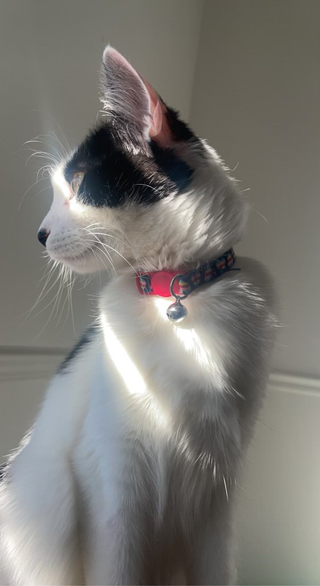
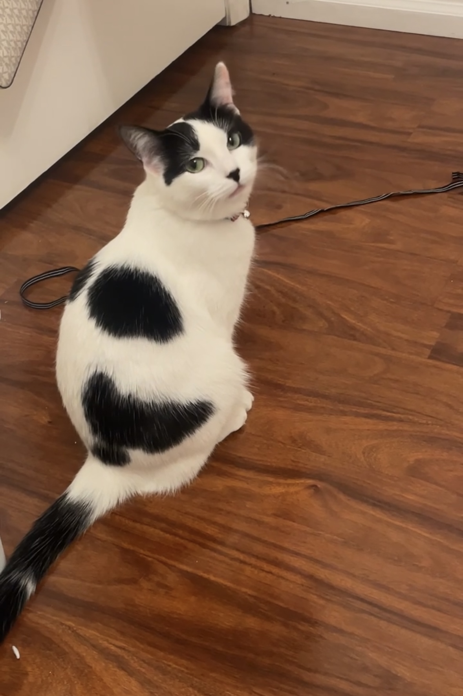
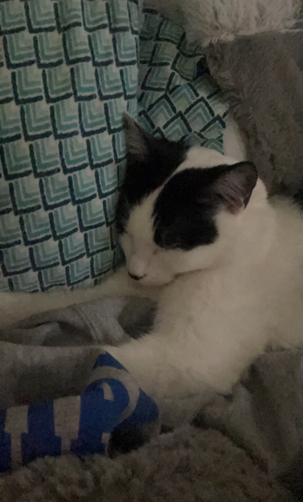
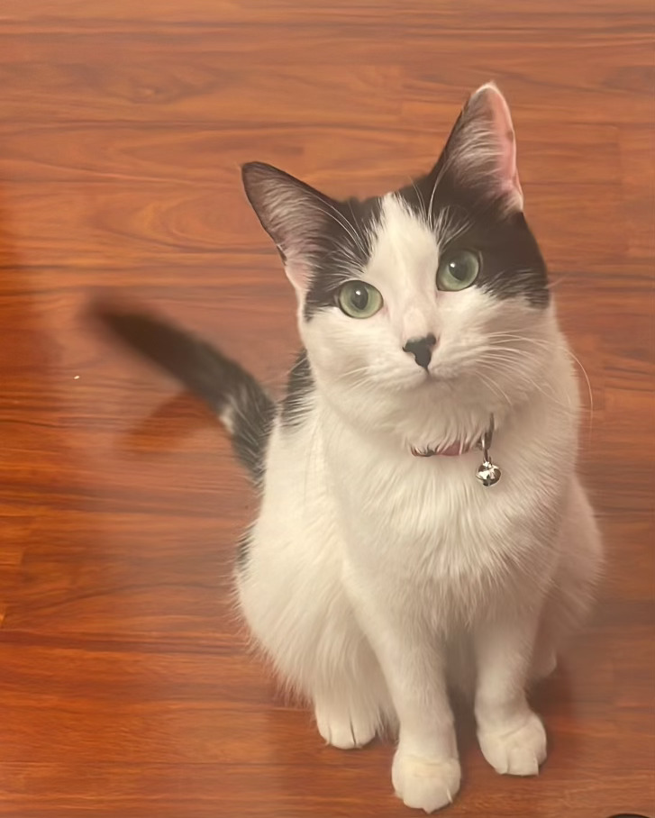
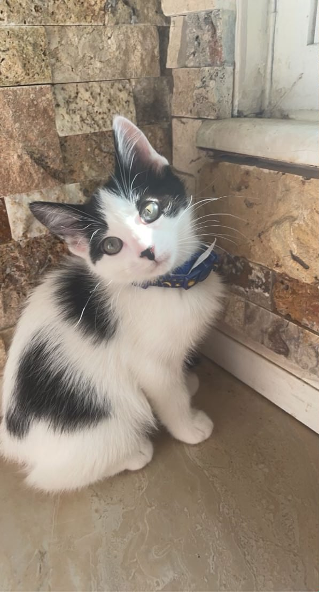

Bella - The Cat
Bella is a very playful cat. She loves to come and sit on your lap while you sit and relax. Do not let her eyes trick you, although she is a lovely and nice cat she will wake you up at 5:30 in the morning begging for food.
Bella was a kitten from my friend’s cat’s litter, she joined the family in 2021, and has been a lovable family member ever since. She is attention-seeking, well-behaved, and a well-maintained cat.
Photo Gallery
   Likes
- Belly rubs
- Sitting on laps
- Waking you up
Pluto the White Dog

Pluto is a five-year-old rescue dog of an unknown breed. He was found wandering alone and taken to the Valley Humane Society where he found his new family. From a young age, Pluto always had a special personality; he was known for being very, very lazy! He spends most of his time staring out the window to keep watch of his house. Don’t let the laziness fool you because Pluto defends his family from the mailman and squirrels every single day.
Aside from his job as defender of the house, Pluto likes to have fun. Pluto’s favorite part of the day is his daily walk. Sometimes he even gets to go to the park and meet his neighbors. He also loves his toy duck, and only his toy duck. As a dog, it's in his nature to hunt, so he makes sure to get some practice with his toy duck.
Photo Gallery


Likes
- Eating his bone
- Going to the beach
- His toy duck
Brul the Cat

Brul is a 2-year-old Maine Coon cat. She prefers to spend her days lying in bed. She enjoys watching outside from the window as long as there are no loud noises and bugs outside.
Brul loves walks on the beach and taking sun naps on a warm summer day. Brul is a playful cat but enjoys having slow, relaxed days at the same time. She hates grooming and bathing.
Photo Gallery


Likes
- Eating
- Sleeping
- Scratches
HuaHua the Cat

HuaHua is a three-year-old cat with gray and black hair. She is a very fond cat, often coming to my desk to play with me when I do my homework, and she likes to rub my side when I watch TV or play mobile phone. At the same time, she is also very warm, every time when guests come to our home to play, she gets along well with the guests.
Unlike other cats who are very afraid of getting out of the house, HuaHua is very interested in exploring the outside world. Every time when my parents are preparing for a walk at the door, she comes and continues spinning, expressing her wish to go out with my parents.
Photo Gallery

Likes
- Chicken breast
- Salmon
- Beef
Smoothie the Cat

Smoothie has been dubbed the "world's most photogenic cat," and her emerald eyes and golden fur have even inspired a mural in New Zealand. Smoothie also has an aptly-named brother named Milkshake, and the two are often featured together across social media platforms.
She became an internet sensation with 2.3 million followers on her smoothiethecat Instagram account.
Photo Gallery


Likes
- Playing
- Sleeping
- Sunshine